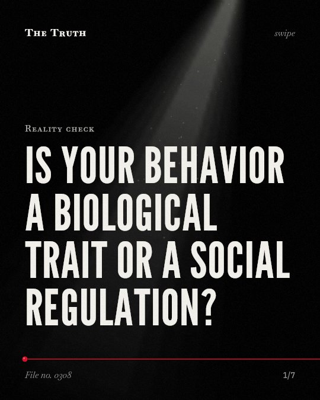
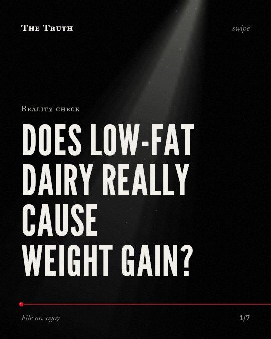
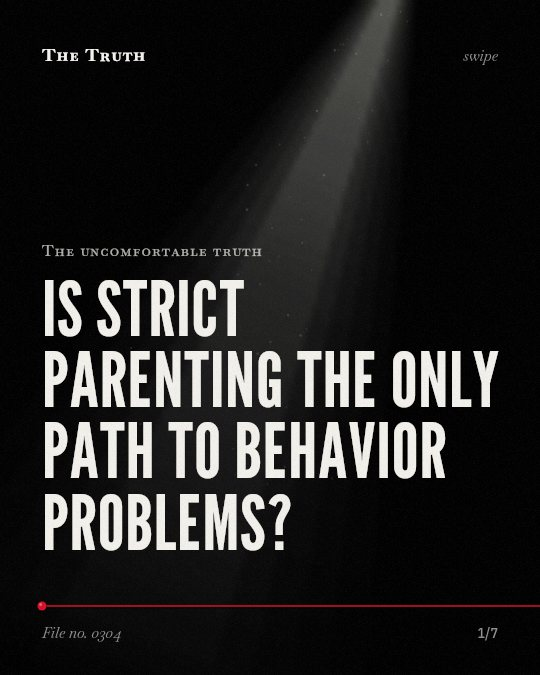
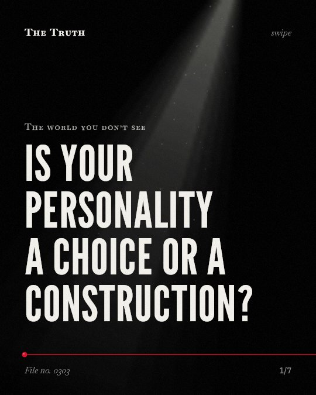
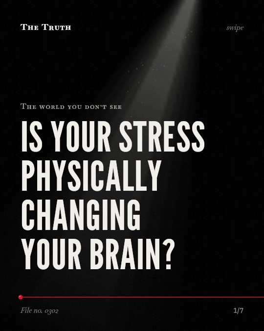
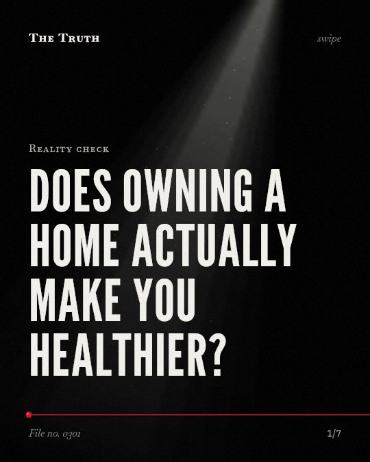

The world you don’t see
Who knows your daily routine better than you?
Smart home technology can effortlessly collect data on your presence and the time you spend on specific activities. The evidence on this is mixed regarding long-term clinical effects.
Supported. 5 checked claims from 4 studies.
Read the fileLatest files
 Is your craving a choice or a physical rewiring?
Is your craving a choice or a physical rewiring? Does talking actually solve your problems?
Does talking actually solve your problems? Is your flow state just a distraction?
Is your flow state just a distraction? Is your feed actually showing you everything?
Is your feed actually showing you everything?
Is your behavior a biological trait or a social regulation?
Does low-fat dairy really cause weight gain? Does social rejection actually hurt like a burn?
Does social rejection actually hurt like a burn? Can the soil keep producing forever?
Can the soil keep producing forever?
Is strict parenting the only path to behavior problems?
Is your personality a choice or a construction?
Is your stress physically changing your brain?
Does owning a home actually make you healthier?By subject
The Truth is a research desk, not an opinion page. A file is only published when its claims can be tied, word for word, to a published study. When the evidence is mixed, the file says so. When it cannot be proven, it is dropped.